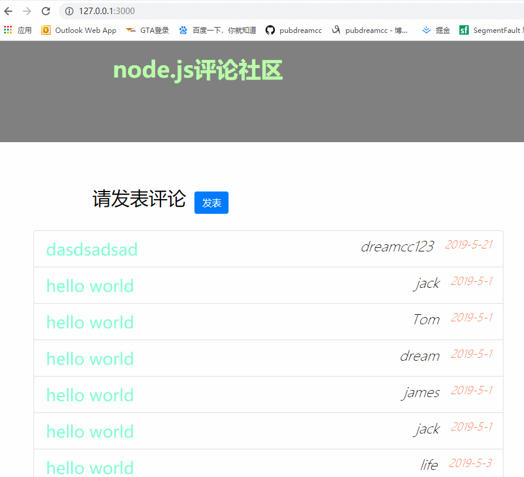

小伙伴们大家好，我是你们的pubdreamcc，接着前面的学习，这篇博文出至于我的GitHub仓库：Node学习教程资料，如果你觉得对你有帮助，欢迎star，你们的点赞是我持续更新的动力，谢谢！
Node.js学习教程资料：GitHub
我们在之前的node.js学习的基础课程中已经完成了一个简单的用户发表评论社区，今天我们利用web开发框架--express来重写案例，进一步加强对express框架的理解和使用。
npm初始化项目在本地任意目录下创建名为：expressCommentList文件夹，cd文件夹中，运行：npm init -y快速初始化，生成package.json文件。安装相应第三方依赖：
npm install express art-template express-art-template body-parser --save我们在expressCommentList文件夹中创建一个名为：public文件夹，用来存放静态文件，也就是公开的资源文件。项目中用到的bootstrap样式文件和页面的脚本文件等都可以放到public文件夹中。
同样地，在expressCommentList文件夹中创建名为：views文件夹，views文件夹用来存放页面视图相关的文件，这也为后面模板引擎默认查找模板文件的位置一致，便于后续编码。
app.js为我们的服务器文件，在这里我们使用express来开启一个web服务器。
app.js文件中核心代码如下：
const express = require('express')
// 引入body-parser
const bodyParser = require('body-parser')
const app = express()
// 开放静态资源
app.use('/public/', express.static('./public'))
// 配置express-art-template模板引擎
app.engine('html', require('express-art-template'))
// 配置body-parser
app.use(bodyParser.urlencoded({ extended: false }))
// 先造一些假数据，供模板引擎渲染
let comments = [
{
name: 'jack',
content: 'hello world',
time: '2019-5-1'
},
{
name: 'Tom',
content: 'hello world',
time: '2019-5-1'
},
{
name: 'dream',
content: 'hello world',
time: '2019-5-1'
},
{
name: 'james',
content: 'hello world',
time: '2019-5-1'
},
{
name: 'jack',
content: 'hello world',
time: '2019-5-1'
},
{
name: 'life',
content: 'hello world',
time: '2019-5-3'
}
]
app.get('/', (req, res) => {
res.render('index.html', {
comments: comments
})
})
app.get('/post', (req, res) => {
res.render('post.html')
})
app.post('/comment', (req, res) => {
// 得到post请求发送的数据
const comment = req.body
comment.time = '2019-5-21'
comments.unshift(comment)
// 重定向到首页（‘/’）
res.redirect('/')
})
app.listen(3000, () => {
console.log('running...')
})这里使用了express-art-template模板引擎渲染模板文件，并且通过express的中间件：body-parser来获取表单POST提交后的数据，最终通过把POST提交的数据合并到原始数据中即可显示在首页上。
对于express-art-template和body-parser在express中的具体用法，不清楚的伙伴可以关注我的之前Node教程资料：express中art-template的使用和express中获取post请求数据，这里就不再赘述。

如果需要完整demo代码，可以查看GitHub上仓库Node学习demo案例文件夹，当然如果你有好的建议也可以issue我，或者留言评论，thank you!